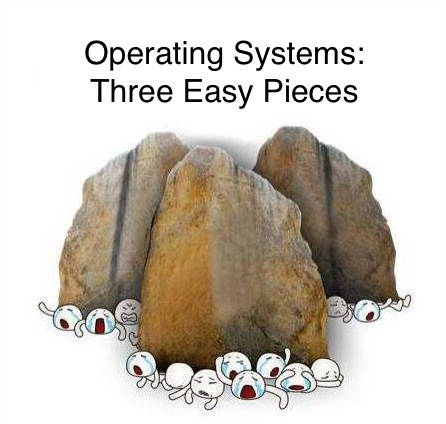

阅读材料
如果你有读过觉得非常好，值得进入推荐列表，请告诉 jyy！如果你有不同意见，例如强烈反对推荐，也请联系 jyy!
关于读书和入门
作为一个过来人，jyy的建议是多读书：
- 计算机系统中的很多知识是关联的，因此你对体系结构、编译器、软件工程等领域的理解都会加深对操作系统的理解；反之也一样。认识通常是 “螺旋式上升” 的；
- 计算机系统不是纸上谈兵，因此学习很多技术是非常重要的，例如如何使用 Linux 系统调用编程、如何使用正则表达式、如何使用 profiler 等等。技术类书籍是掌握这些实践的很好切入点；
- 每一本书的作者都有他们独到的视角 (某些为了凑数编教材而编教材的除外)。因此也许某个作者的思维方式就特别适合你，读起来就会很轻松。
当然我们已经尽量为你选择了一些经过了 (一定) 考验的好书。
计算机系统基础
- [教科书] 袁春风、余子濠. 计算机系统基础 (第二版). 机械工业出版社.
- [参考书/CSAPP] Randal E. Bryant and David R. O'Hallaron. Computer Systems: A Programmer's Perspective (3rd Edition). Pearson, 2017. (作为手册查阅)
UNIX/Linux基础
编程
操作系统

(感谢 2017 级同学的投稿)
操作系统设计与实现
开源操作系统实现